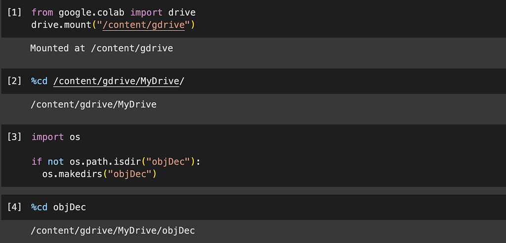
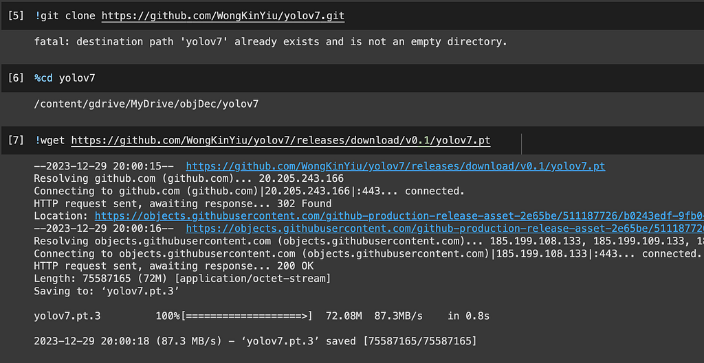
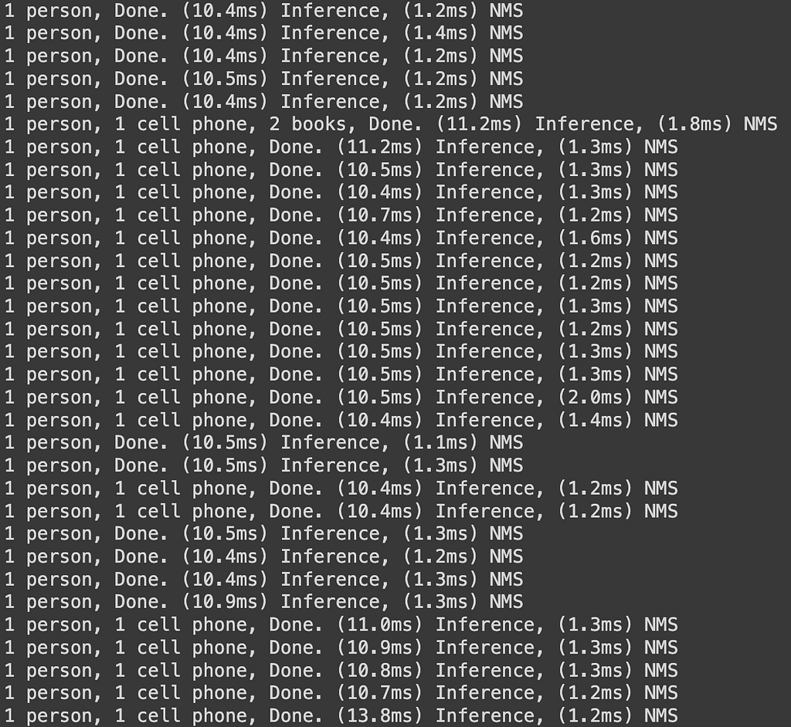

Jan 2024
Using Object Detection to Allow Robots to be more Adaptive to their Environment.
Humans, by nature, are curious. We will go above and beyond to understand something new and or explore some of the most dangerous environments in the name of science. Now, although we want to explore, in many cases we lack the facilities to explore a certain environment. To bridge this gap, we turn to robots; yet, these machines often lack the rapid adaptability and instinctive responses that humans possess.
In this article, I will discuss how I used machine learning to perform object detection and my next steps on how we can leverage this.
1: Google Collab Setup
The first thing I did was set up a Google Collab Notebook. Since I am working off a relativity old laptop that does not have access to a GPU, I resorted to cloud-based processing within Google Collab. I set it up using Google Drive.

2: Yolo Setup
I utilized the powerful YoloV7 pre-made datasets and software to achieve the most efficient overall program. Yolo is at the frontier of object detection and it was a must.

2.1: Why YoloV7?
You might be asking, why is it so powerful? Why did I choose to go with this? Well, the answer is simple, I chose it for one simple feature, an Extended Efficient Layer Aggregation Network.
Imagine you have a system that’s good at recognizing different aspects of an image, like shapes or colours. Now, think about how you might improve this system without making it much more complicated.
The Extended Efficient Layer Aggregation Network (E-ELAN) is like a smarter version of this system. It doesn’t mess up how the original system learns from its mistakes, but it does something clever to make it even better.
Here’s the trick: Instead of changing the way the system learns, we add a special technique called group convolution. This technique helps the system pay attention to even more details in the image. It’s like having different groups of eyes looking at different parts of the picture.
Then, we do something called shuffle and merge cardinality. This is a fancy way of saying that we mix together the things each group noticed. It’s like combining the insights of different groups, making the system better at understanding the whole picture.
Why does this matter? Well, it means our system can learn more about the different features in an image and use its smarts more efficiently. It’s like upgrading your brain so that it can process information in a smarter way without making things too complicated. So, in simpler terms, E-ELAN helps computers get even better at understanding and recognizing things in pictures without making the learning process too tricky.
3: Uploading Video
I uploaded this video:

Ran it using this code:
4. Output and How It Works
Alright, let’s break down how YOLO detects objects in simple terms:
1. Dividing the Picture:
YOLO takes a picture and divides it into small squares, making it easier to focus on one area at a time.
2. Guessing in Squares:
For each square, YOLO tries to guess if there’s an object in it and, if yes, what kind of object it is. It’s like looking closely at different parts of the picture. (This is trained by us! Remember all those “Make sure you are not a robot” quizzes before you open a website)
3. Cleaning Up Guesses:
YOLO cleans up extra guesses by removing overlapping ones. This ensures that it doesn’t count the same object multiple times.
4. Detecting and Naming:
YOLO then outputs the remaining guesses as rectangles (boxes) around the objects it found and labels each box with the type of object it thinks is there.
In summary, YOLO quickly looks at different parts of a picture, figures out what objects are there, and draws boxes around them, telling you what’s in the picture. It’s like having a super-fast detective that can spot and name things in a photo.
With this method, Yolo V7 outputs this video:

YoloV7 can create bounding boxes around the object that it detects and provides it with a label. The output prints out:

Why is This Important for Robots?
- Adaptability and Autonomy: Discuss the significance of rapid adaptability and instinctive responses in robots. Emphasize how these qualities can enable robots to navigate and operate more effectively in dynamic or unknown environments.
- Human-Robot Interaction: Explore how improved object detection can enhance human-robot interaction. For instance, a robot with advanced object recognition capabilities can better understand and respond to human gestures or instructions.
How Could the Code Be Used in a Real Robot?
- Navigation and Manipulation: Provide concrete examples of how the code could be applied in a real-world scenario. For instance, discuss how a robot equipped with your object detection system could navigate its environment and perform physical manipulations based on detected objects.
- Safety and Efficiency: Highlight how improved object detection contributes to the safety and efficiency of robotic systems. Robots can avoid obstacles, identify and interact with objects of interest, and adapt their actions accordingly.
What Else Would Need to be Done?
- Additional Training Data: Address the importance of continuous learning and the need for additional training data. Discuss potential challenges and strategies for collecting diverse and representative datasets to improve the model’s accuracy in various environments.
- Fine-Tuning: Mention the possibility of fine-tuning the model for specific tasks or environments. This step could involve adjusting hyperparameters, incorporating domain-specific knowledge, or refining the model based on real-world feedback.
Next Steps:
My next step, software-wise, is to create some sort of robot to conduct physical manipulations based on what it is seeing. Ex: If it sees something on the right of the camera, it moves left.